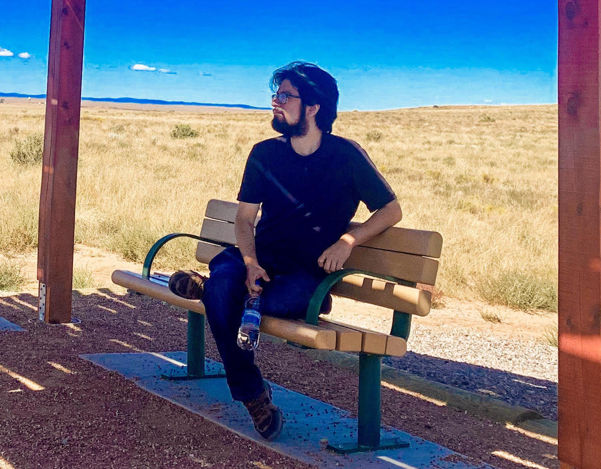

 I am a computational and theoretical astrophysicist who studies high energy phenomena near supermassive black holes. I am a member of the School of Natural Sciences at the Institute for Advanced Study and an Associate Research Scholar at the Princeton Gravity Initiative in the Physics Department at Princeton University.
For detailed academic information, see my CV.